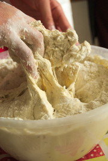

"Proving Times"
part 1: Out of hand, never out of hands
When you have an idea, you are pretty much the only one in control of it. You can modify it at will, forget about it, and keep it hidden from anybody else's influence. But when you start talking about it to others, that's when it becomes interesting. It's like the idea gets duplicated into everyone who hears or reads about it, and all the copies start growing in relation to each other to form something that seems to have a life of its own.
This is exactly what my personal experience has been with the bakery. In 2013, after starting to make my own bread in my apartment kitchen, I participated in two Sourdough Exchange" week ends with "Bread Matters, where we learned not only about bread making, but also about agriculture, growing grains, harvesting, threshing, breeding, milling, markets, and more.
If you want to know, that's where I contracted a serious case of communitysupporteditis, which would prevent me from thinking about anything else than starting a community supported bakery in Stirling.
I came back from these week ends, and kept thinking about how to start something, and the reality hit me. I had no clue where to begin. However, I felt I could make bread that people liked, and this confidence was reinforced when I started letting people around me know about the idea. A few people at Transition Stirling and the Stirling University Students' Union and their emerging environmental project seemed interested. There was an excitement about the idea, but these were just words, one might say.
Exactly, and that's when I understood the value of speaking my mind. As mentioned above, it is like preparing the ground and sowing the seeds, with a rough idea of what it'll be like if it grows. Nothing was going to happen without this initial stage.
This is how Tom, Nils and I met, it is also how Andrew Whitley and Veronica Burke from Bread Matters encouraged me to go on their 'Baking for Community' 4 day course in February 2014.
From all the conversations and encounters, arose a sort of positive accountability. People would remember one of us talking about the bakery, the project, our values, and keep us accountable simply by asking how it was doing, or by suggesting new ideas and methods.
In short, this is how everything got out of control! Nils and Tom (self-taught home master bakers too) have participated enormously towards what the bakery has become today, and so have the many hands and minds that have worked with us: the Students' Union, Transition Stirling, Forth Environment Link (amongst many more), and most importantly, every one who has made the effort to support us by buying our bread during the first year and has communicated their enthusiasm, ideas, criticisms to us and contributed to our chaotic but certain improvement!
To conclude, this goes beyond a big thank you for all the help and support the project has received so far. Leading or hosting a community-supported project means that from a simple, singular idea, a complex, a pluralistic vision can grow, joined by similar ideas and taken on by other people. It is important to recognise that the bakery is now "out of hand", but looks like it will never be out of hands.
published by: Théo